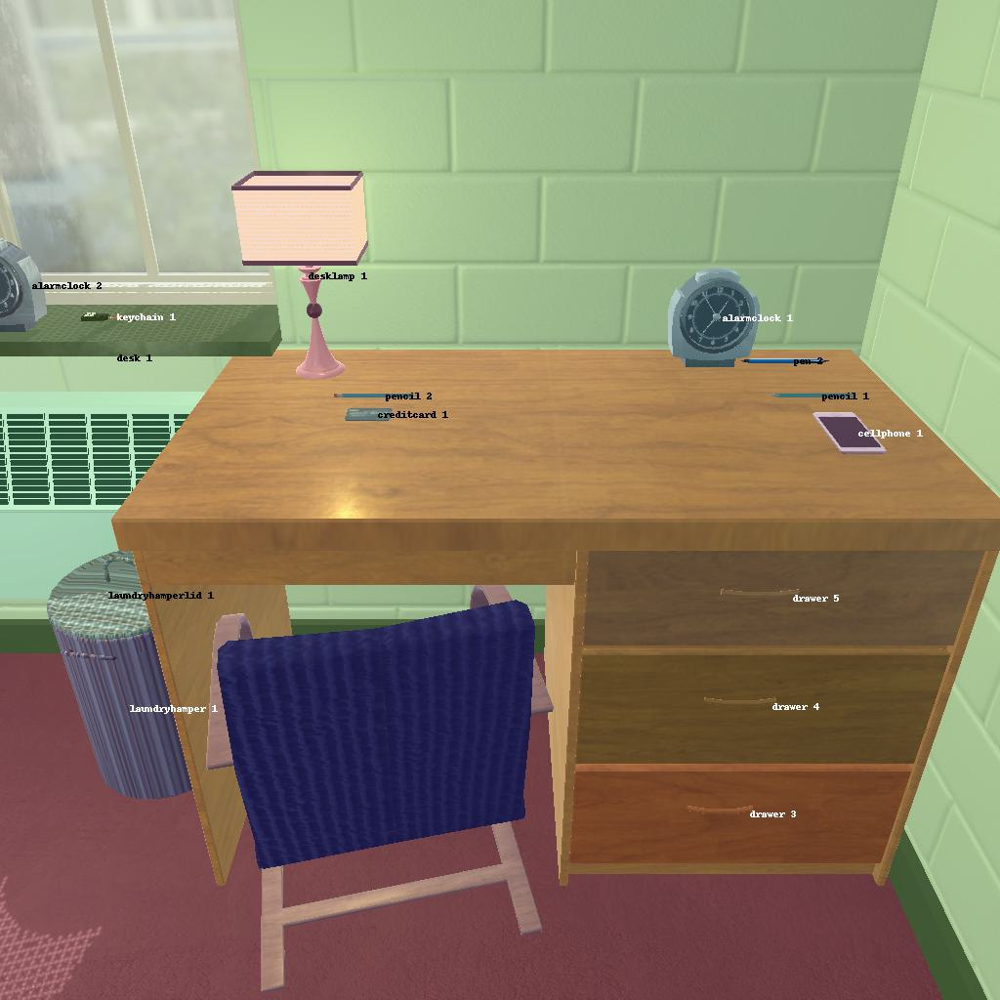
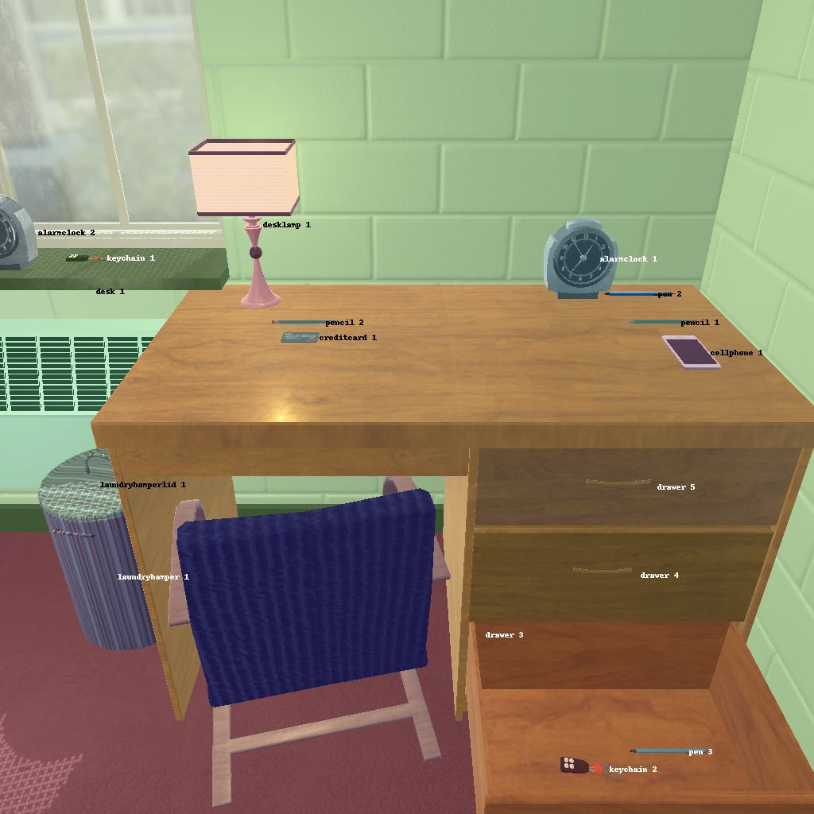

---------------------------------------------------------task: 8---------------------------------------------------------
--------------------------------------------------------------------------------------------------------------------------------------------------------------------
--------------------------------------------------------------------------------------------------------------------------------------------------------------------
Step:--------------------------------------------------------------------------7-------------------------------------------------------------------------------
----------------------------------------
VLM Prompt:
Image1:
Image2:
Image3:
**Instruction**
1. Analyze the provided image to identify all visible household objects, focusing on those relevant to the task description "put some laptop on desk."
2. Use the analysis of the image and the task hint "The agent must find an object of the desired type, pick it up, find the correct location to place it, and put it down there." to answer the question: what is the most reasonable action in the choices for the task description "put some laptop on desk"?
4. Decide and write the answer using the template: The answer is: (i): , where i is the real number. If there is no desired object in the image, search every place based on **Initial Observation** to find the object. And if no one is exactly correct, choose a similar answer.
**Initial Observation**
You are in the middle of a room. Looking quickly around you, you can see bed (1), garbagecan (1), desk (1), sidetable (1), drawer (1-5), laundryhamper (1)
**Answer Choices**
(1): go to bed 1
(2): go to garbagecan 1
(3): go to sidetable 1
(4): go to drawer 1
(5): go to drawer 2
(6): go to laundryhamper 1
(7): go to drawer 4
(8): go to drawer 5
(9): take alarmclock 1 from desk 1
(10): take pencil 1 from desk 1
(11): take pen 2 from desk 1
(12): examine desk 1
**Answer**
Let's think step by step by following the instructions.
----------------------------------------
----------------------------------------
Original Response:
Firstly, we need to identify all visible household objects in the provided images. In image 1, 2, and 3, the desk is visible with various objects on it such as alarm clocks, a desk lamp, pencils, and a pen. Additionally, there is a chair with a laundry hamper beside it. The task description is "put some laptop on desk," and none of the images show a laptop. Therefore, we need to search every place based on the Initial Observation to find the object.
The most reasonable action would be to start searching in the places mentioned in the Initial Observation where a laptop might be found. These could include a drawer or a side table. Since the desk is already visible and does not have the laptop, we can exclude it from the search. Bed and garbagecan are also unlikely places to find a laptop. Laundry hamper is also an unlikely place for a laptop to be. Hence, it's reasonable to check the drawers which are common storage places for such items.
Given the answer choices and following the task hint, the most reasonable action would be to check the drawers one by one to find the laptop.
The answer is: (4): go to drawer 1. If the laptop is not found in drawer 1, the next reasonable actions would be to go to drawer 2, then drawer 4, and so on, following the order of the drawers.
----------------------------------------
----------------------------------------
>>> Refine Original VLM Response and Get Pure Action: go to drawer 1
----------------------------------------
-----------------------------------------------------------------
Running time: 15.639110565185547 seconds
Total Money: 4.55875
-----------------------------------------------------------------
-----------------------------------------------------------------
Text Observation:You arrive at loc 4. The drawer 1 is closed.
-----------------------------------------------------------------
UNSUCCEED